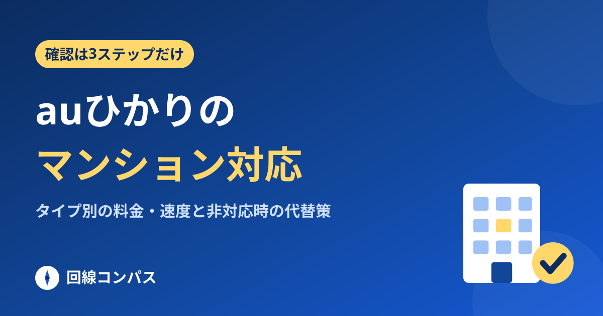
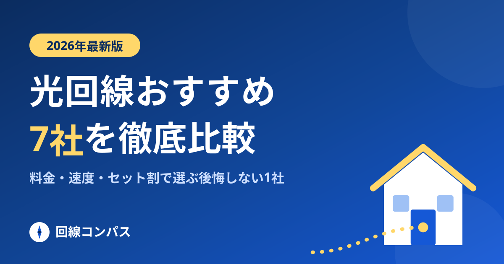
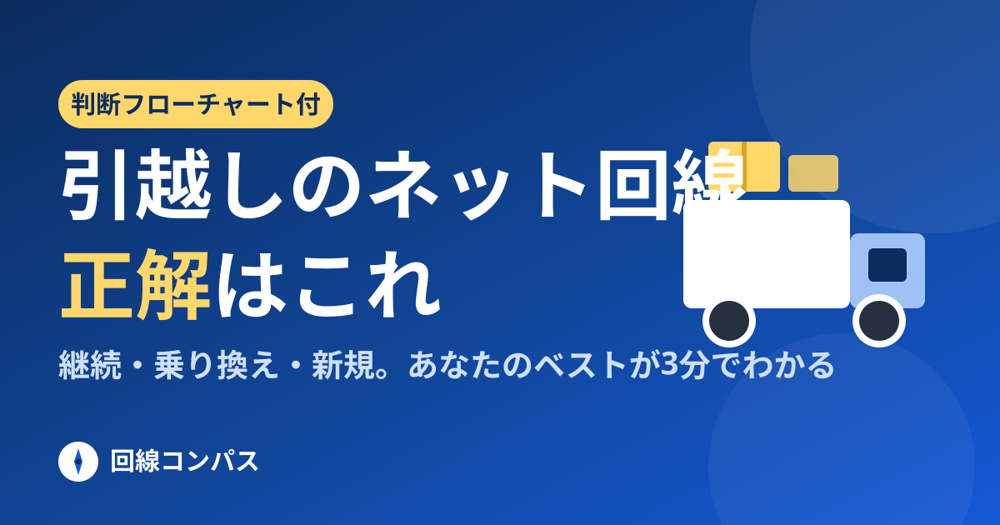
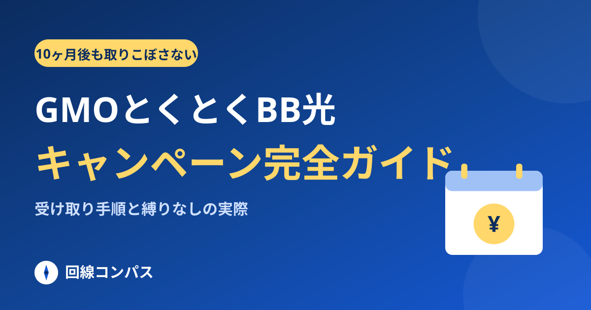
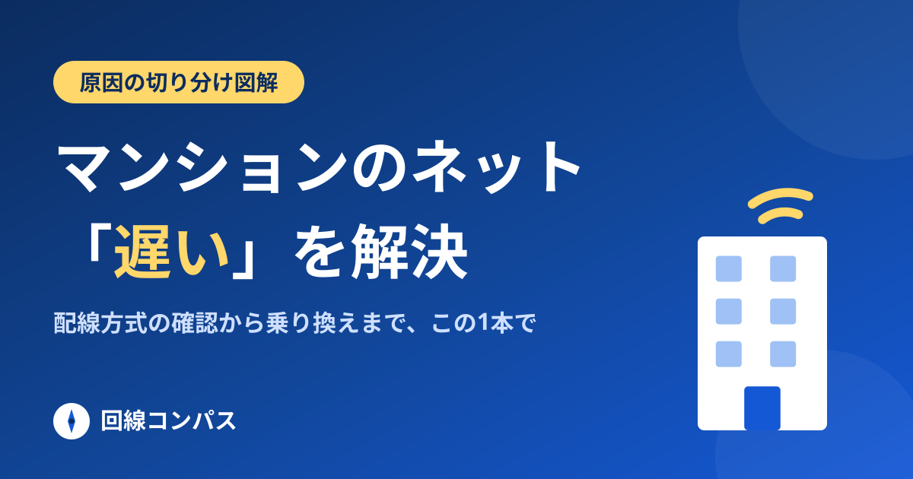

 マンション auひかりのマンション対応を確認する方法【2026年】タイプ別の料金・速度と非対応時の代替 タイプは建物ごとに固定で選べません。建物名まで入れた判定で料金も速度も確定します。 2026.08.30 公開
 比較 光回線おすすめ7社比較【2026年8月】迷わない選び方を図解でやさしく解説 スマホ別の最適解が3分でわかる、当サイトのメイン記事。まずはここから。 2026.08.29 更新
 引越し 引越しのネット回線はどうする?継続・乗り換え・新規の正解がわかる判断フロー 継続か乗り換えかは2つの質問で決まる。タイムラインとつなぎ回線も解説。 2026.08.29 更新
 キャンペーン GMOとくとくBB光のキャンペーン完全ガイド|キャッシュバック受け取り手順と縛りなしの実際 受け取りは開通10ヶ月後。取りこぼさない手順と縛りなしの実際を解説。 2026.08.29 公開
 トラブル解決 マンションのネットが遅い原因と解決策|配線方式の確認から乗り換えまで図解 VDSL・ルーター・無料ネット。犯人を特定してから、お金を使いましょう。 2026.08.29 更新